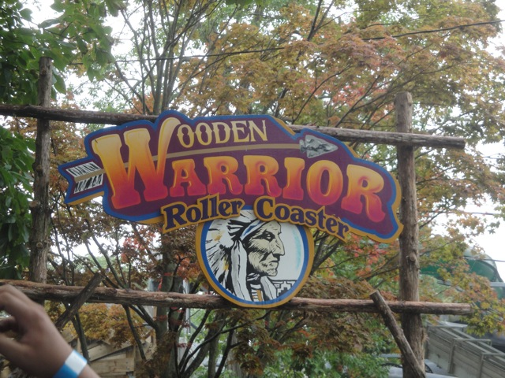
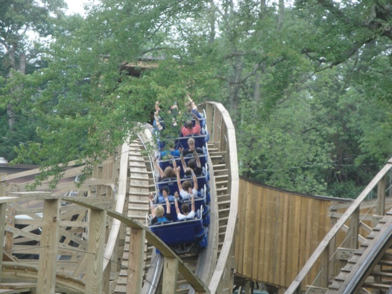
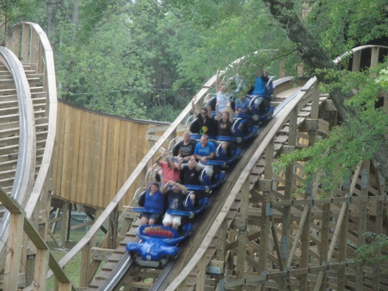
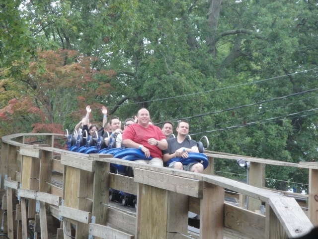
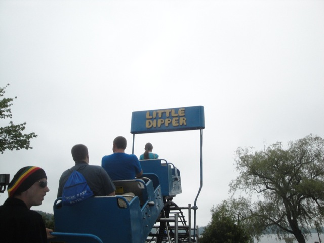
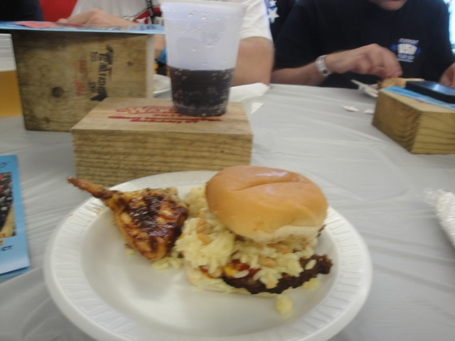
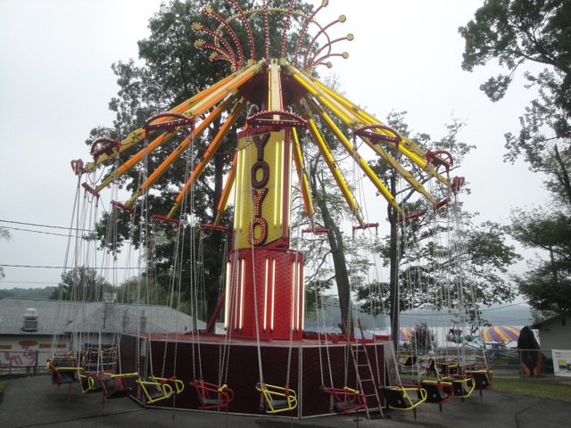
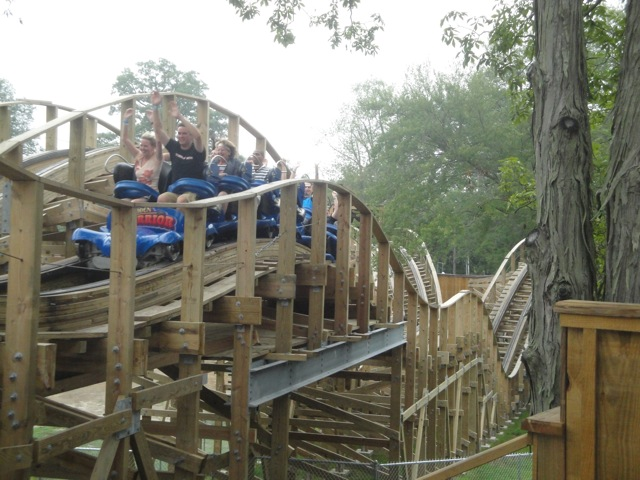

TPR's Northeast Trip
Bowcraft & NYC
Coney Island
Quassy
Lake Compounce
Six Flags New England Palace Playland Funtown Splashtown Canobie Lake Park La Ronde Great Escape Six Flags Great Adventure
All right. Day 3 of the Northeast Trip takes away from New York and off into the rest of New England.
 We have arrived at Quassy Amusement Park.
We have arrived at Quassy Amusement Park.

It may be a small little family park, but they've got this little beauty.
Yeah. This is the reason why we're here.
 DO NOT be fooled by it's puny little size. This thing hauls ass and is much better than most full sized coasters.
DO NOT be fooled by it's puny little size. This thing hauls ass and is much better than most full sized coasters.

Those riders are getting some serious ejector air.

And the tunnel they just got out of is really cool and smells like fresh wood. Almost like a Christmas Tree.

Oh, and more good news. Wooden Warrior is fat friendly. You'll still be able to ride, even if the lap bar only covers half of your lap. (As shown here.)
This definetly takes the award for the strangest drop tower. It's literally puny, but for some reason, it actually is really powerful. I mean, it f*cking LAUNCHES you down to the bottom. And it hurt my legs in a strange way that I can't explain. But I love it and would still hope these things become the new Moser Towers.
 Oh yeah. We still have one more credit to get at this park.
Oh yeah. We still have one more credit to get at this park.

Yeah. This kiddy coaster is nothing more than a credit. Cha Ching. NEXT!!!!
We got served lunch here, and it was awesome!!!
"Oh boy!!! I've always wanted to see 3D Fireworks. I'm sick of only seeing lousy 2D Fireworks."
Shawn: "This park gave me free beer and free wood. This park kicks ass!!!!"
Jeremy: "I really wish I was old enough to drink that beer right there." =(

Anyone else wanna try a Rice Burger?
Oh, and the park gave us free coupons to get either free cotton candy, ice cream, or fried dough. This park is awesome.
Like I've said, Quassy is a great little park. They've got Wooden Warrior, a GREAT wooden coaster, and aside from that, it's just a really fun little park with lots of fun rides to ride and just a lot of fun to be had, like this tilt a whirl.
OMG!!! This entire park is just an RCT Scenario!!! I knew it along!!!!
"HA HA HA HA!!!!! Quassy Slide was great!!!"
Like I said, lots of random flat rides to ride and enjoy. =)
"Fun Slide looks like a really good value."
Yeah. This park has a train, and it's really fun.
 Wooden Warrior from the train.
Wooden Warrior from the train.

OMG!!!! BEST CHAIRSWINGS EVER!!!!! SCREW THE CRAZY CHAIRSWINGS AT MICHIGANS ADVENTURE AND THE ONES OVER WATER AT INDIANA BEACH!!!!! THESE TAKE THE WIN BY FAR!!!!! If there was ever a ride where I thought I was going to die on, this would be it. (Ok, I didn't think I was going to die, but I did think I was going to fall out and break my legs!!!) I was sitting behind Piers, and without even trying, I was heading over to his swing and kicking it!!! This was hilarious as Piers is hilarious and said lots of funny things when I kicked him such as "Hey!!!" and "Something terrible happened!!!" And then my chair was just leaning towards the ground at a 45 degree angle, so I was leaning down and the only thing that prevented me from slipping out of the seat was the seatbelt they make you wear. So yeah. This ride totally kicked ass.
This paratrooper however, sucked. It barely did anything and just was dull and boring.
This park has a really nice setting right along Lake Quassapaug.
 And what better way to finish our visit to Quassy than with more rides on Wooden Warrior.
And what better way to finish our visit to Quassy than with more rides on Wooden Warrior.
 "Check it out. I'm riding with a bunch of schoolkids."
"Check it out. I'm riding with a bunch of schoolkids."

If you're ever in the area, definetly check out Quassy. Wooden Warrior alone is worth the stop and the park is really nice.
"Hey David!!! I got you a present!!! I know that'd look really good on you, so I got you this leapord thong just for you. And it's made from a real leapord, since I know how much you love stuff made from animals."
Lake Compounce
Home